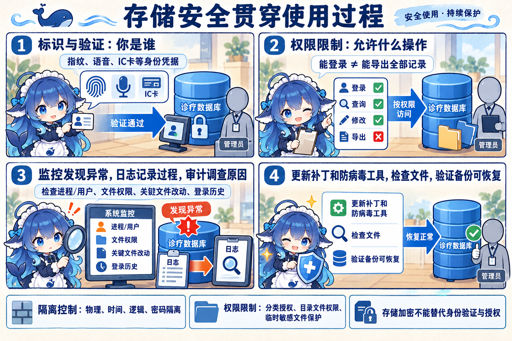
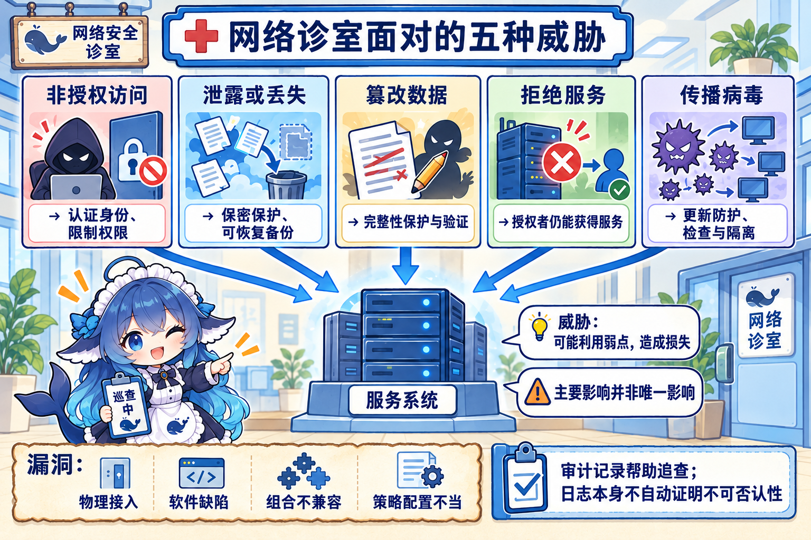
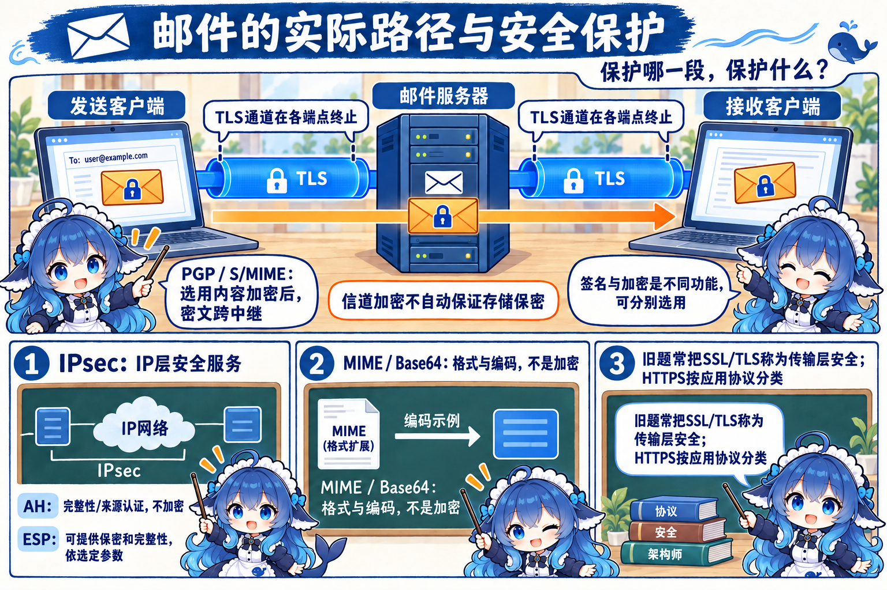
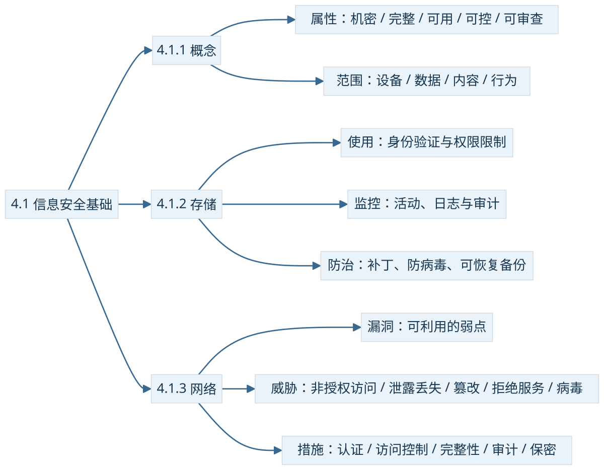

诊室把一份检查记录存入系统。患者希望外人看不到，医生希望结果未被擅改，值班人员需要随时调阅，管理员要限制导出，还要能调查一次异常访问。五种要求围绕同一份记录，却各有判断依据。
4.1.1 先问保障什么，再问保护谁
教材把信息安全的五个基本要素列为机密性、完整性、可用性、可控性、可审查性。机密性问未授权者是否知道信息；完整性要求只有获准者能修改，也能辨认未经允许的改动；可用性要求授权者在需要时能访问。服务器被大量无关请求占满，记录即使没有泄露或改动，可用性仍可能受损。
可控性关注授权范围内的信息流向和行为方式，例如限制敏感记录外发。可审查性要求出现问题后有调查依据和手段，例如能把访问账号、时间和操作关联起来。题目若明确问“防止发信者事后否认”，对应不可否认性。这两个术语不能直接互换：能查到日志，不自动构成不可否认的证据。
另一种分类问保护谁。设备安全关注服务器、机房和介质这个物质基础；数据安全关注记录的秘密性、完整性、可用性；内容安全按教材关注信息在政治、法律、道德层面的要求；行为安全要求操作的过程和结果不危害数据的秘密性、完整性，并能发现、控制、纠正偏离预期的行为。它们是保护范围，同一事件可同时涉及多个范围。
教材对设备还分稳定性（一定时间不出故障的概率）、可靠性（一定时间正常执行任务的概率）和可用性（可正常使用的概率）。这是教材的设备层定义；它们不构成新的五要素，也不意味着每个设备只保护一种属性。

认证、访问控制、加密、审计、备份恢复则回答用什么机制。把“加密”填进五要素列表，会把手段写成目标；把“数据安全”当作机密性的同义词，又把对象范围缩成了一个属性。
4.1.2 存起来以后，仍要管使用过程
教材的存储安全同时包含信息使用安全、系统安全监控、病毒防治，涉及加密与非法攻击防范。磁盘加密是其中一环，不能替代登录验证和权限判断。一个已通过身份验证的医生，可以有读病历权限，仍未必有批量导出权限。
标识与验证先确认身份的合法性。教材举人的物理特征识别（签名识别、指纹、语音）和安全物品识别（IC 卡、磁条卡）；其中“签名识别”是识别人写出的特征，后面 4.6 的数字签名使用密码机制，二者名称相近而机制不同。权限限制再决定这个身份能够对哪些资源执行哪些操作。
存取控制可采用隔离控制和限制权限。物理隔离划开设备或空间，时间隔离把使用安排在不同时间，逻辑隔离由系统划分地址空间或权限域，密码隔离使没有密钥的人无法理解受保护内容。限制权限则分类授权、管住目录与文件访问、加密保护临时目录或通信缓冲区里的敏感文件，并在使用后按流程移走或删除。隔离的类型是并列选择，不能排成从低到高的升级路线。


监控、日志、审计配合回答“发生了什么”。监控发现当前状态和异常；日志留存活动；审计据此检查、关联、追查。教材要求管理员检查四类对象：当前进程和登录用户；文件所有者、授权、修改日期与访问属性；命令/口令/启动运行/可执行等关键文件改动；用户与超级用户的登录历史。只有安装某一工具，不能直接推出这四类工作已经完成。
病毒防治还需要管理制度。教材归纳病毒的隐蔽性、传染性、潜伏性、触发性和破坏性。措施包括及时更新安全补丁与防病毒工具、检查敏感文件、避免账号复用弱口令、按业务要求备份并验证恢复、正确配置系统与防护、审慎处理陌生或熟人发来的附件。备份帮助减轻数据损坏后的影响，不能阻止所有感染。
教材同时列有每天备份、特定认证防病毒产品、不使用时断网、重要系统物理隔离等历史制度性要求。复习保留其措施类别；实际系统的备份频率、联网和产品合规选择须按业务及适用规定确定，本册不把这段旧要求扩写为所有系统的统一配置指令。
4.1.3 弱点怎样变成损失
漏洞是可被利用的弱点，威胁是可能带来损失的行为或事件。教材从物理接入、软件安全漏洞、软硬件或组件组合不兼容，以及安全策略和配置选择不当四方面解释网络弱点。单有一张拓扑图不能保证安全；在受保护设备上关闭必要的安全机制，也会改变实际结果。
五种网络威胁分别是非授权访问、信息泄露或丢失、破坏数据完整性、拒绝服务和利用网络传播病毒。非授权访问既包括非法用户进入，也包括合法用户越权；篡改、删除、插入、重发可能损害完整性；拒绝服务通过资源耗尽或干扰服务影响可用性。一个事件能影响多个属性，这里列的是主要影响。


控制措施按职责选：认证核对“对方是谁”，访问控制核对“对方有没有这项权利”，保密保护敏感内容，完整性验证帮助辨别改动，审计帮助确认交易和活动的证据。教材此处将审计与不可抵赖联系起来；实际要形成抗抵赖证据，还要有可靠身份、证据保护和适用机制。普通可改写日志的存在不足以完成这些条件。
连接：协议的名字要和保护对象一起记
一封邮件从客户端经过服务器到接收者，可能同时使用不同保护。IPsec为 IP 层提供安全服务；AH 提供完整性和数据来源认证等服务，不加密；ESP 可提供保密与完整性等服务，具体组合由安全关联（SA）参数决定。ESP 传输模式主要保护 IP 载荷；隧道模式把原 IP 包放进新包里。选用加密的隧道保护内层包，外层路由头仍要供网络转发。
TLS保护其端点之间的通信。考试常将 SSL/TLS 归为传输层安全，协议实际位于应用与底层传输之间；HTTPS 作为 HTTP 的安全使用方式按应用协议识别。浏览器到 Webmail 的 HTTPS 能保护这一段，不能据此断言邮件在后续中继、终端或存储处也保持保密。


OpenPGP/PGP 与 S/MIME能够对邮件内容应用签名和加密。若选择内容加密，信封内的密文可以跨中继保持受保护；若只签名，就没有因此获得内容保密。MIME扩展格式以容纳多媒体和非 ASCII 内容，Base64 是编码。知道规则即可解码，二者本身不提供密码保密。2019 年下半年上午 Q64 的四选项是 SSL、HTTPS、MIME、PGP；问与邮箱安全无关者，选 MIME。原解析把 IDEA 写成散列算法，此处只沿用已核题干和答案，IDEA 属对称分组密码。
同一判别法也适用于已学网络知识：2022 年下半年上午 Q65 在开放式、WPA、WPA2、WEP 中选采用 AES 的 WPA2（经典 AES-CCMP 口径）；WEP 与早期 WPA/TKIP 涉及 RC4，不能因此推导所有 Wi-Fi 配置均不可受攻击。SNMPv3 的用户安全模型（USM）有无认证、无加密，有认证、无加密，以及认证加密三种级别；功能由选定级别决定。该模型不试图防护通信规律分析和 DoS，不能把 authPriv 推成对所有威胁的全面保证。
把判断带回案例
高校财务虚拟化方案的完整条件是校园网用户在线访问、两台物理服务器承担虚拟机、计划在故障后把业务转到另一台。比较方案时要看审计、维护接口和存储可访问性；题目没有要求通过网闸做互联网物理隔离，不能把增加网闸直接当作必需改进。实际隔离产品是否支持特定业务转发要查产品与需求，不能从旧题推出所有网闸一概不能处理在线业务。
故障后另一节点须拿得到可用的数据，方案可以依赖共享或复制存储；“必须是某一种磁盘阵列”超出了这个必要条件。宿主机已经断电后的恢复，也要与仍在运行时迁移内存状态的热迁移分开。这条连接补充高可用辨析，不能替代本节的存储安全主干。
下午案例“在线教育课程管理系统”问题 3 要求介绍五要素，采用教材的可审查性口径；第 8 章质量属性题又可能把防 DDoS 归安全性、恢复时间归可用性。关注题目问的是安全属性还是架构质量分类，再按该层次回答。


再次拿起诊疗记录：对象是记录与承载设备，目标是五个属性，机制按身份、权限、监控、防治、网络保护逐一落实。下一节把这条链延伸到组织与社会影响。